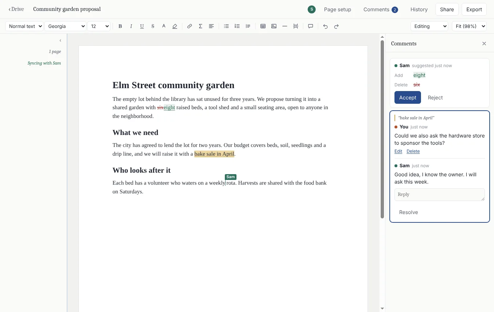

Office suite with no server
commonplace
A free, open-source suite you collaborate in like Google Workspace, without an account, a subscription or a company holding your files. Edits travel directly between the people using them, encrypted end to end.
- commonDocs, commonSheets and commonSlides, plus tasks, calendars, whiteboards, forms and a shared drive
- Live cursors, comments, suggested edits and every earlier version
- Works offline and merges on reconnect; opens and saves .docx, .xlsx and .pptx
- JavaScript
- Electron
- Yjs
- Hyperswarm
- Tiptap